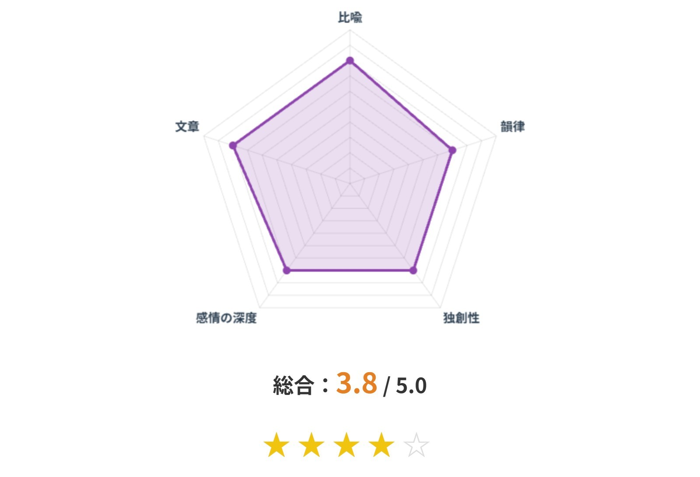
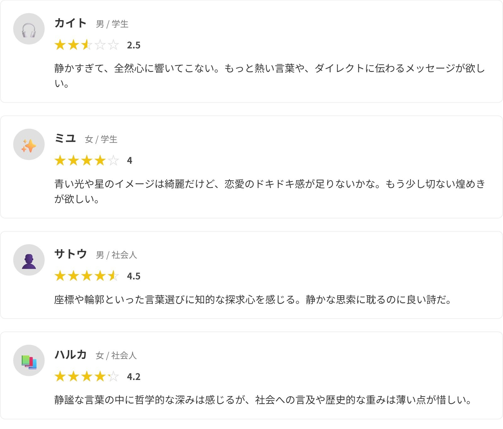
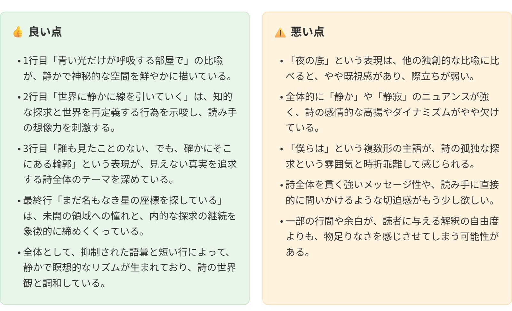
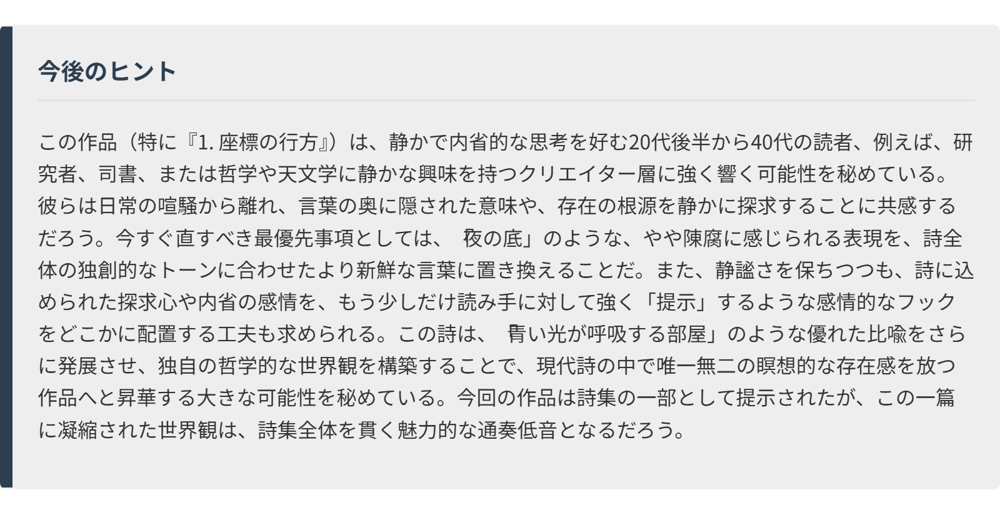

×

最新のAIを活用し、プロの文芸編集者と4人の個性豊かな詩の愛好家による多角的なフィードバックを提供する詩作支援ツールです。
言葉の響き、抽象的なイメージ、作品の奥底に潜む感情のうねりを言語化・推敲する際にご活用ください。
※入力されたテキストは解析の瞬間のみ使用され、サーバーに保存されることはありません。
一篇の詩（または連作詩・詩集）を現代詩・文芸の視点から厳格に評価します。言葉選びのセンスから全体の思想性まで、以下の5項目を10点満点で採点します。
あえて異なる感性を持つ4人の読者をシミュレート。あなたの詩がどのような受け手に深く刺さるのか、本音の感想から予測できます。
難解な言葉を使わず、ダイレクトに心に刺さるポエトリーリーディング（朗読詩）のような熱量やリアルさを好む読者です。
美しい風景や切ない恋愛、言葉そのものが持つ「きらめき」や透明感のある世界観を愛する読者です。
現代詩の難解なロジックや、文章の裏に隠された鋭いメタファー（暗号）、文脈の構造美を読み解きたい知性派です。
思想の深さ、歴史や人間社会を鋭く見つめる重厚なテーマ性、文学としての格調の高さを求めるベテラン読者です。
フォームに詩を入力して「読んでもらう」ボタンを押してください。

総合スコア
編集者講評
読者レビュー(前)
読者レビュー(後)精読中...